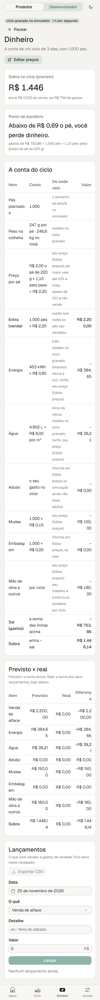
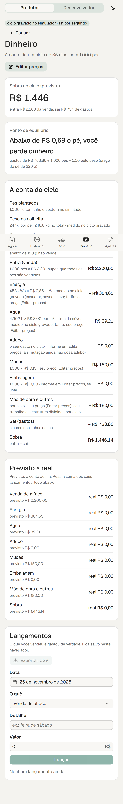
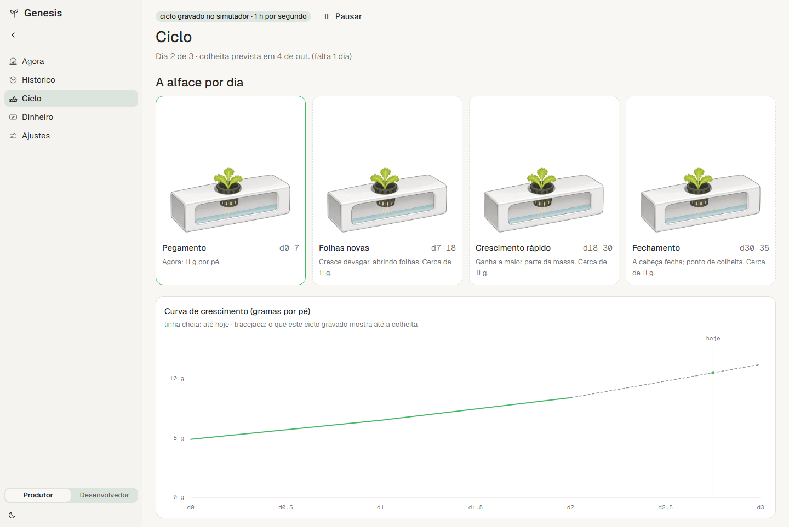
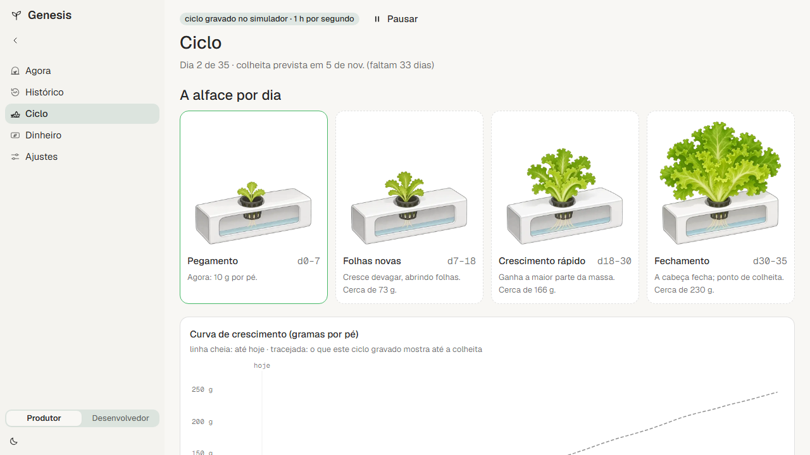

Revisão visual por um par de olhos de fora
Um subagente que não escreveu o código (e não podia editá-lo) subiu o app, tirou 44 capturas (11 rotas × desktop 1440×900 e celular 375×812 × claro e escuro) e devolveu 30 problemas com rota, tela, tema e gravidade. Corrigi os de gravidade alta e média que valiam para a apresentação; os que ficaram estão listados com o motivo.
Antes e depois




Capturas da revisão (antes): docs/revisao-visual/fase-14/. Depois das correções: docs/revisao-visual/passo-13/.
O que foi corrigido
| Gravidade · onde | O problema | A correção |
|---|---|---|
| alta · Agora, Ciclo, Visor, Vitrine | O peso não batia: "na colheita 11 g" no Agora, 247 g no Dinheiro. O ciclo tinha "3 dias" num lugar e 35 no outro. | Era o recorte de exemplo (3 dias de passos) levando também só 3 dias de massa. O recorte agora leva a massa dos 35 dias, e a duração do ciclo vem dela. Em produção (o ciclo inteiro) isso nunca aconteceu. |
| alta · Ciclo | Quatro alfaces iguais, todas "cerca de 11 g". | Mesma causa; agora 10, 73, 166 e 230 g. |
| alta · Dinheiro, celular | Valores partidos ao meio nas tabelas. | No celular as duas tabelas viram lista (item e valor na mesma linha). |
| alta · Treino, celular | "Comparar gerações" vazava do cartão. | Pisos de largura menores (110/72/72 px): as 3 colunas cabem em 311 px. |
| alta · Vitrine, celular | A nota e os botões de velocidade cortados com "…". | A descrição vira texto que quebra a linha; botões curtos ("1 h/s"), com a frase inteira embaixo. |
| alta · Lado a lado, Treino | Três "notas" diferentes para a mesma geração sem dizer de onde vinha cada uma. | Cada uma diz o clima: "nota no ciclo gravado" (o mesmo clima para todos) e "melhor nota (no clima de cada geração)". São números certos, de climas diferentes. |
| alta · Agora, Histórico, Lado a lado | O último rótulo do eixo ("18:0") cortado. | Margem direita do gráfico de 12 para 28 px. |
| alta · celular | Sem caminho para o Histórico. | Aba "Histórico" na barra do Produtor (5 abas). |
| média · Histórico, celular | A aba "Luz e CO₂" cortada. | "Temperatura" virou "Ar" (o mesmo nome do card): as 4 abas cabem. |
| média · Agora, Ciclo | A linha cheia da curva terminava antes de "hoje"; eixo com "d0.5". | O ponto de hoje entra nas duas linhas; o eixo mostra só dias inteiros. |
| média · Treino | Os dois campos de Comparar deixavam a direita vazia; o link parecia texto. | Campos numa grade que ocupa a largura; o link saiu (a página Lado a lado está no menu). |
| média · Modelo, Resumo do celular | "Saiu da faixa: 2 · Voltou: 0" com a estufa na faixa; o resumo do celular mostrava evento de outra gravação. | "Voltou" passou a contar a saída do risco (passando pela "atenção" na beira da faixa); o resumo segue o mesmo campeão do Modelo. |
| média · Dinheiro | "Diferença" sem sentido claro; data cortada. | A coluna se chama "Real − previsto"; o campo da data ficou mais largo. |
| média · Visor, Lado a lado | "fixo" e "barradas" sem explicação. | "fixo na simulação" e "ações barradas (segurança)". |
| (achado meu) · Gravações | Nas regras fixas e "sem controle", o lugar da rede dizia "o modelo não está na lista". | Agora diz que não há rede e o que aquela régua faz. |
O que ficou, e por quê
- Menu do Desenvolvedor no celular só com "Resumo" (média): é de propósito, desde o prompt do dashboard; as páginas de análise são de tela grande. O diagrama da rede espremido no celular (média) vem daí.
- Espaço acima da alface nos cartões (média): é o desenho (gerado por IA) que tem margem no topo. Recortar as imagens é outro passo.
- Gravações: "escolha até 4" (média): é o limite da própria página de reprodução, que mostra um painel por gravação. O Lado a lado é outra página, sem esse limite.
- Baixas: bolinhas apagadas quase somem no tema escuro (Modelo), "faixa boa" por cima da linha na ponta direita, o card Luz sem linha de faixa (a luz não tem faixa boa), três estilos de sinal de menos, as linhas pontilhadas da curva de aprendizado (são as duas gerações comparadas) e o selo "erro" no resumo do celular.
O revisor também conferiu, e não achou: nenhum "?" sobrou, nenhum jargão ("agente", "geração", "modelo", "rede", "treino", "campeão", "regras fixas") no Produtor, nenhuma rolagem horizontal no celular (largura de 375 em todas as rotas) e nenhum eixo espremido.
Números
| O que | Valor |
|---|---|
| Capturas da revisão | 44 (11 rotas × 2 telas × 2 temas) |
| Problemas apontados | 30: 10 altos, 12 médios, 8 baixos |
| Corrigidos | os 10 altos e 7 médios, mais 1 achado meu |
| Testes depois das correções | 71 unitários e 33 e2e passando |
O que deu errado ou surpreendeu
O recorte de exemplo enganava a revisão. Três dos problemas "altos" eram o mesmo: um recorte de 3 dias dizendo "o ciclo tem 3 dias". Em produção o ciclo tem 35, mas a apresentação sem internet usa o recorte. A correção foi na raiz (o recorte leva a massa inteira), não tela por tela.
Como reproduzir
cd dashboard
MSYS_NO_PATHCONV=1 CAPTURAS=passo-13 ROTAS="/,/historico,/ciclo,/dinheiro,/ajustes,/dev,/dev/treino,/dev/modelo,/dev/gravacoes,/dev/vitrine,/visor" npx playwright test capturas